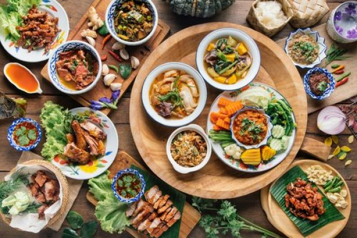

Resep Masakan
Home
Tentang Website
Tentang STMIK KHARISMA
Home
Tentang Website
Tentang STMIK KHARISMA
menu
Sebelas Resep Kuliner Tradisional

Ayam Goreng Sasando
Ayam Lodho Khas Tulungagung
Bubur Manado
Nasi Bakepor Kalimantan Timur
Pallubasa
Papeda Telor Ayam
Rawon Surabaya
Sate Lilit Ayam Khas Bali
Seblak Bandung
Sop Konro
Soto Padang